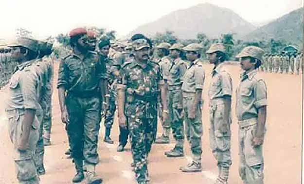
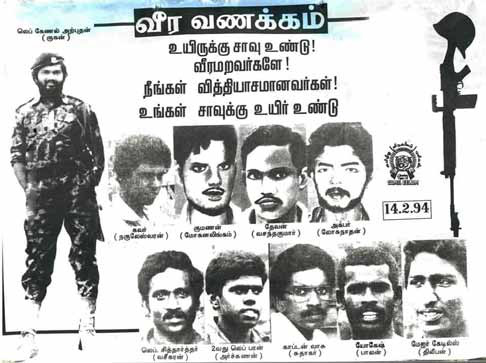
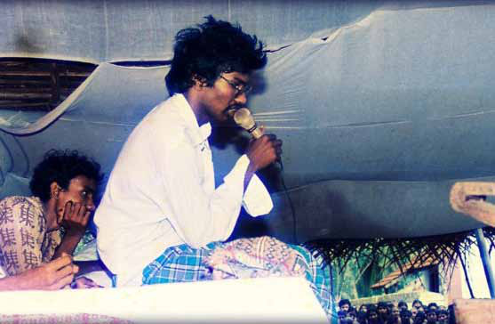
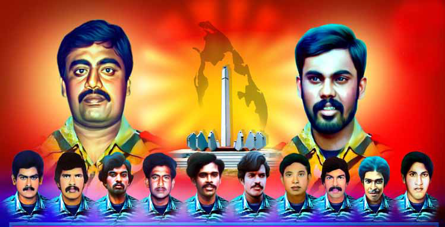

Confronting Ethical Dilemmas in LTTE's Strategies
Confronting Ethical Dilemmas in LTTE's Strategies
Jaffna Monitor
hellojaffnamonitor@gmail.com
21
Confronting Ethical Dilemmas in
LTTE's Strategies
In 1978, I was in Ponnamman's house,
in his room, along with Prabhakaran.
Prominent LTTE members Raghavan
and Sellakili were also present, though
Ponnamman himself was not there.
During our political discussion, Sellakili
made a disturbing statement. He said,
"Even young Sinhalese children should
not be spared. They must be killed.
They will grow up to kill Tamils. It's
better to kill them while they are still
children." This statement deeply troubled
me. Sellakili, known for his technical
knowledge and high regard within the
LTTE, advocating such an extreme stance
was bewildering. I argued that such
actions were unethical and immoral;
one should not entertain such thoughts.
However, to my shock, Prabhakaran
supported Sellakili's view, stating, "Those
children will grow up to kill Tamils,
so there is nothing wrong in killing
Lt. Col.
Ponnamman and
Prabhakaran at a
Training Camp in
Tamil Nadu
Sellakilli and Prabhakaran at Udayarkaddu
Training Camp, 1983


Jaffna Monitor hellojaffnamonitor@gmail.com 22 them now." This stance left me profoundly disheartened. As the argument intensified, Prabhakaran and Sellakili eventually left. Raghavan was also present, and contrary to my expectation that he would support my view, he agreed with Sellakili, asserting the necessity of killing Sinhalese children. Ragavan's mindset in this regard was deeply shocking to me. After joining the movement in 1978, My school friend Ponnamman was appointed to oversee the LTTE's training camps in India starting in 1983. I recall a particular incident when I was at the sixth batch training camp in Mettur, Tamil Nadu. I came from the Military Office (MO) to test my prototype improvised devices: a Claymore Mine and an Anti-Tank Mine, which I named 'Piglet,' designed based on the shaped charge concept. During this time, Ponnamman was not present at the camp. In the camp, from a corner, I kept hearing pitiful cries. When I inquired, I found a young man tied with a rope being brutally beaten by the members who ran the camp. When I asked about his inhumane punishment, I was told that he was being punished for trying to escape from the camp. I stopped their beating and made them remove the rope. After several months, I learned the young man had been promised a boat to Sri Lanka. Then he was shot dead in the middle of the sea. This revelation filled me with rage. This would not have happened without the knowledge of Ponnamman and Prabhakaran. Ponnamman was my dear friend; there is no room for disagreement. However, I couldn't bear the thought of how he could allow this heinous crime. I felt sad and angry with him and thought karma would take its toll. Eventually, Ponnamman died in an explosion while refueling an explosive-laden LTTE bowser in Navatkuli Jaffna. Anuradhapura massacre and its Underlying Politics When I learned of the massacre of 146 innocent Sinhalese civilians in Anuradhapura on May 14, 1985, I was absolutely devastated and sickened. While some argue that the killings were in retaliation for the Sri Lankan military's massacres in Valvettiturai, two wrongs do not make a right. This act is a war crime and a crime against humanity. But behind this killing, there is a story to tell. Engagement with RAW and Ethical Confrontations I was in Puducherry (Pondicherry) during the July 1983 riots when the Research and Analysis Wing (RAW) chief contacted me. Commemorative Poster Honoring Ten Liberation Tigers, Including Lt. Col. Ponnamman, Who Perished in the 1987 Navatkuli Explosion, Jaffna

Jaffna Monitor hellojaffnamonitor@gmail.com 23 Later, when Prabhakaran came to India, he established a connection with RAW in Chennai. Subsequently, I decided to break off my contact, but Prabhakaran asked me to maintain it. I stayed connected until I left the LTTE. I would often ride to Pondicherry to discuss various issues. At one point, the RAW officer suggested that the LTTE should massacre Sinhala civilians. I was angered and refuted this idea, stating that our struggle was against the Sinhala regime, not the civilians. When I met Prabhakaran and discussed this issue in Chennai, he informed me that RAW had also made similar requests to him. A couple of months after our conversation, the Anuradhapura massacre occurred. Balasingam, the official spokesperson, issued a statement denying the LTTE's involvement in the killings. In my subsequent meeting with the RAW officer, he congratulated me on the brutal act. This left me in a dilemma: either RAW genuinely wanted the massacre to occur, or they were evaluating the LTTE to understand its motives. Following the incident, they might have been reassessing the LTTE, or they might have genuinely been offering congratulations. I cannot conclusively determine their true intentions. However, I didn't delve further into the matter. At that time, I was deeply engaged in military development and research at the Military Office (MO). Shortly after the Anuradhapura killings, the first Thimbu Talks commenced. Prabhakaran tasked me with representing the LTTE in these talks alongside Tilakar, who worked in my MO. Years later, two or three of the LTTE who participated in the killings admitted to me that they had conducted the attack and how they had escaped. I have always been vehemently against the killing of innocent Sinhalese civilians. I came across accusations in the Sri Lankan media that Pulendran, the then LTTE leader in Trincomalee, had been killing Sinhalese civilians. During a meeting with him in Jaffna, I confronted Pulendran about this and sternly warned him that I would shoot him on the spot if he continued attacking civilians. Notably, in the late 1970s, I interviewed both Pulendran and Seelan for recruitment into the LTTE while in Trincomalee. I chose Seelan as a new member but had reservations about Pulendran due to his immaturity. Despite my decision, someone else later recruited him into the LTTE. INDIAN ARMY'S ARRIVAL, THILEEPAN'S HUNGER STRIKE... When the Indian Army arrived in Sri Lanka, Tamil people welcomed them with garlands, drums, and music. The relationship between the Indian Army and the Jaffna people was initially cordial to the extent that if the LTTE attacked the Indian Army, the people themselves would retaliate against the LTTE. Prabhakaran wanted to disrupt this friendly relationship. You need to understand that we did not initiate an armed struggle by placing our trust in India. India bears no responsibility for resolving the Tamil issue in Sri Lanka. Whether the goal is Tamil Eelam or a federal state, the reality is that a complete military victory is unattainable. Ultimately, all parties must come to the negotiating table. Western powers and the Soviet Bloc allowed India a free hand in dealing with Sri Lanka, a fact made clear to the Tigers by both blocs. India achieved its objective by bringing Sri Lanka under its foreign policy influence through the India-Sri Lanka Agreement (an agreement between India and Sri Lanka, not with the LTTE).
Jaffna Monitor hellojaffnamonitor@gmail.com 24 Part of the Indo-Sri Lanka Treaty recognized the traditional land of the Northern and Eastern Tamils of Sri Lanka and annexed it as a province for the Northern and Eastern Provincial Governments. Many unresolved issues are left for future negotiations regarding the devolution of power for the Tamil province. Prabhakaran was wrong if he expected India to hand Tamil Eelam on a silver platter. It was Prabhakaran's fault if he misguidedly believed Tamil Eelam could only be achieved through 100% military victory without foresight. During the Indo-Sri Lanka Accord period, it's a fact that the LTTE secretly brought in an arms shipment without the knowledge of both the Indian and Sri Lankan governments, despite LTTE's denials. On one side, the LTTE feigned the surrendering of weapons to the Indian Peace-keeping Force while simultaneously smuggling in arms. The Sri Lankan Navy's interception of this shipment led to the arrest of 17 LTTE members, including Kumarpappa and Pulendran. Many, like Pulendran, had merely gone to view the ship. Prabhakaran exacerbated the situation by providing cyanide capsules to these 17 members on October 5, 1987. Tragically, 13 of them died. I view this cyanide incident as an unnecessary loss of life. Prabhakaran created all the violations and dramas to destroy the entire process. Thileepan might have genuinely desired to sacrifice his life, hoping to achieve something beneficial for the Tamil people. However, Prabhakaran manipulated Thileepan's intentions for his own political ends. I was with Prabhakaran on the day Thileepan began his hunger strike. Prabhakaran asked Kasi Anandan and me to escort Thileepan to the hunger strike site in Nallur. After Thileepan's death, Prabhakaran Thileepan Speaking from the Hunger Strike Stage

Jaffna Monitor hellojaffnamonitor@gmail.com 25 directed Kasi Anandan and me to hand over his body to the Faculty of Medicine in Tirunelveli. I conveyed his body there, where Rajini Thiranagama, head of the Department of Anatomy, along with the other Doctors, received it. The five demands made by Thileepan during his hunger strike were not major or complicated. The solution was on the card of the Indo-Sri Lanka accord. Forming an interim government and confining the Sri Lanka army back into barracks, etc., needed some time to settle. Both Thileepan's hunger strike and the cyanide incident were orchestrated by Prabhakaran to incite the Tamil population against the Indian army. This strategy ultimately proved to be successful. Commemoration Poster for 12 Tamil Tigers, Including Kumarappa, LTTE Area Commander for Batticaloa, and Pulendran, LTTE Area Commander for Trincomalee, Dated 5 October 1987 Evaluating the Indo-Sri Lanka Accord and LTTE's Strategy India is not the adversary; Prabakaran deliberately orchestrated the prevailing situation. As a result, the Tamil community now endures losses far more significant than what they initially encountered, with effects that are expected to linger for two to three generations. Unfortunately, post-1980, the central committee of the LTTE lost its effectiveness, paving the way for Prabakaran to consolidate his position as the sole leader. It's common for individuals to develop an inflated sense of self-importance upon gaining a modicum of fame and power, a tendency comparable to a 'messiah complex.' This complex is characterized by an individual believing they are, or are destined to become, a savior with a grand mission, often leading to a disconnect from reality and rational decision- making. This Dialogue with Anton Master: to be continued in our next issue
